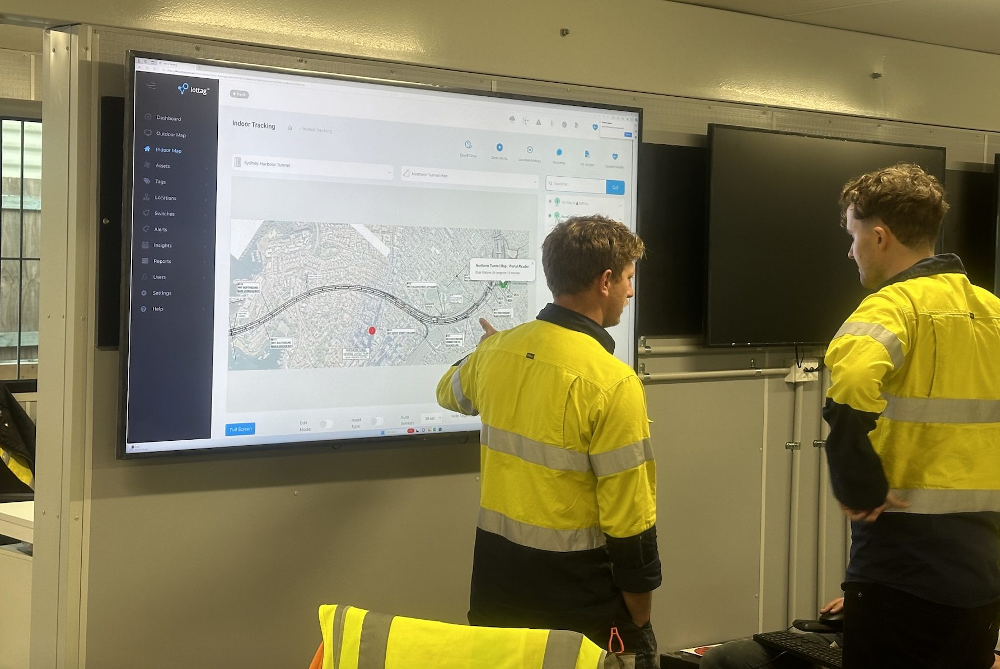
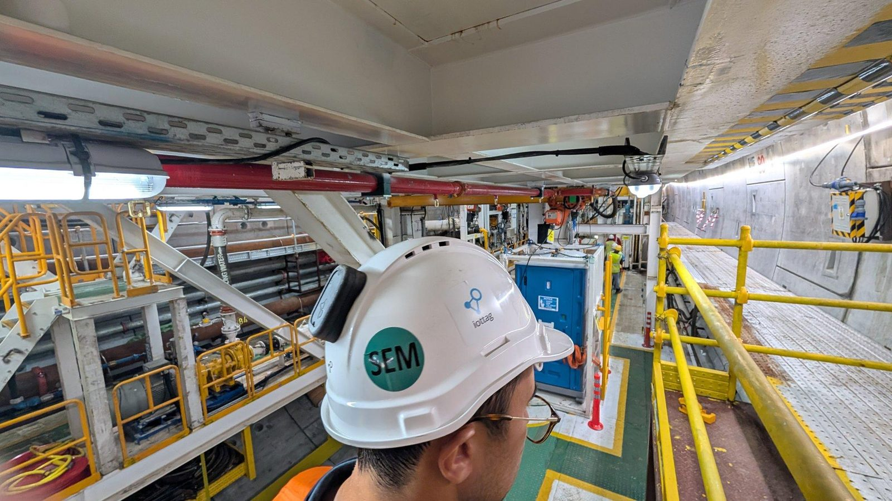
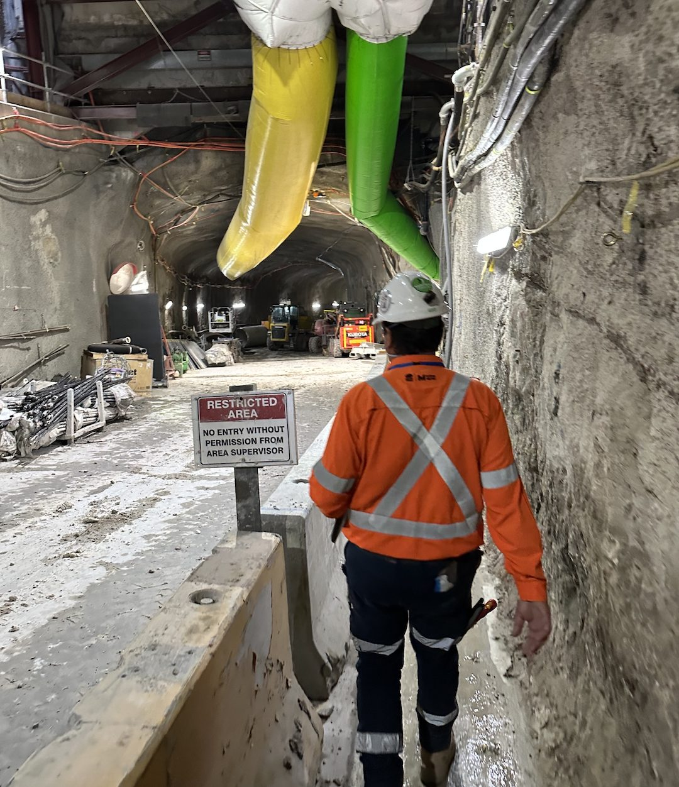
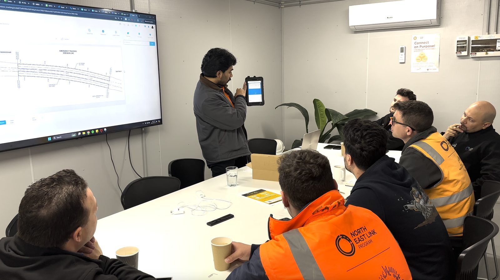

IoT Security & Governance
Security Designed Into The Operational Intelligence Ecosystem
Operational Intelligence platforms depend on trusted information.
Every connected device becomes part of the operational ecosystem.
iottag helps organisations maintain visibility, security and governance across the entire technology lifecycle.
Workforce devices
Operational systems
Environmental sensors
Positioning infrastructure
Fleet technologies
Security Beyond The Device
Security is not limited to hardware.
It extends across:
The iottag platform is designed to support secure operation across every layer of the technology ecosystem.

Secure Device Identity
Every connected device should be uniquely identifiable.
The platform supports:
This helps organisations maintain confidence in operational data.

Firmware Management & Version Control
One of the most overlooked risks in operational technology is inconsistent firmware deployment.
The platform supports:
This helps organisations maintain consistency across thousands of deployed devices.
Lifecycle Governance
Connected devices evolve throughout their operational life.
The platform helps organisations manage:
Providing visibility throughout the entire device lifecycle.
Operational Security Monitoring
The platform provides visibility into:
Helping organisations identify issues before they affect operations.
Governance At Scale
Large operational environments may involve:
The platform helps organisations maintain governance, consistency and visibility across complex deployments.

Security Supporting Operational Intelligence
Security is not simply about protecting technology. It is about protecting operational trust.
Reliable information is essential to:
Operational awareness
Emergency response

Fatal Risk Intelligence
Production Intelligence

Executive decision-making
Strong governance helps ensure that operational insight can be trusted.
Designed For Enterprise & Critical Operations
Applications include:
Mining
Tunnelling
Infrastructure
Airports
Healthcare
Utilities
Critical Infrastructure
Government Environments
Where operational decisions matter, trusted information matters.

Trusted information starts with strong governance
Discover how iottag helps organisations manage security, governance and operational trust across connected environments.